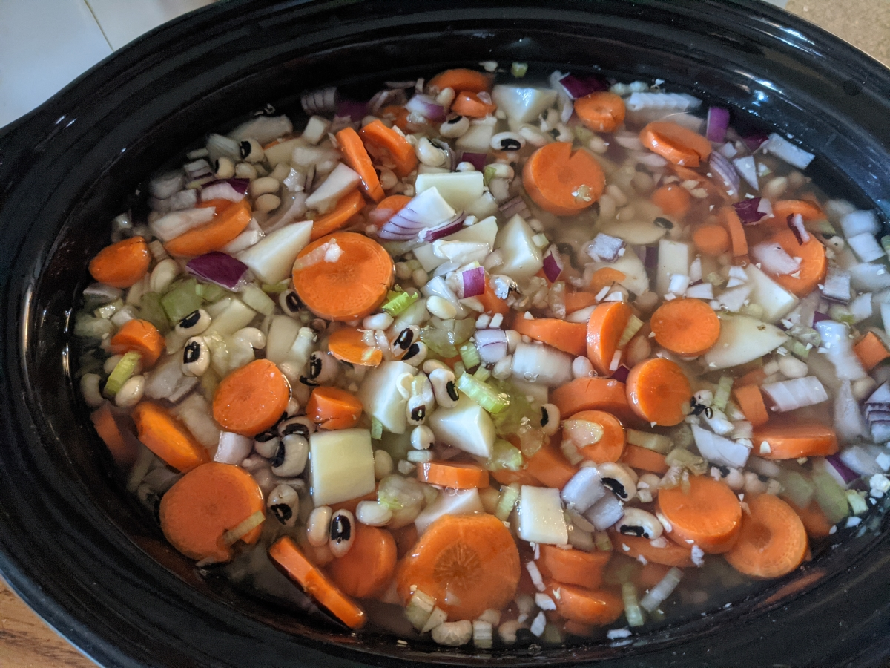

Vegetabe Soup

Delicious and Nutritious
High in nutrients and flavor. A thousand times better than canned!
Ingredients:
- Potatoes
- Carrots
- Onions
- Celery
- Garlic
- Beans
Steps:
- Peel and dice 4 to 6 large potatoes and add to large slow cooker.
- Slice 6 to 8 carrots and add to cooker
- Dice a large sweet or yellow onion and add to the cooker
- Chop 3 or 4 stalks of celery and add to the cooker
- Finely dice 2 to 3 cloves of garlic and add to the cooker
- Add two cups of black eyed peas, navy beans, or other preferred beans.
- Add enough water to cover ingredients and cook on high for about 3 hours or until vegetables are tender
- Salt or salt substitute can be added to taste
Back to Homepage